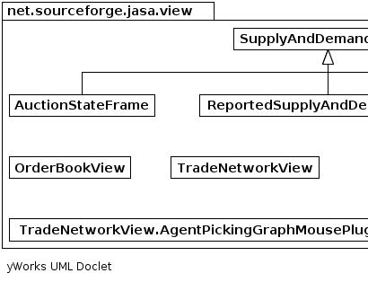
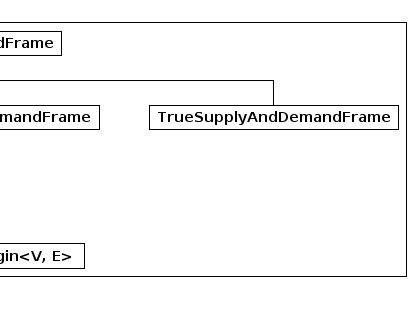

|
|||||||||
| PREV PACKAGE NEXT PACKAGE | FRAMES NO FRAMES | ||||||||
See:
Description
| Class Summary | |
|---|---|
| AuctionStateFrame | |
| OrderBookView | A report which provides a graphical table depicting the order-book which is updated live as the simulation progresses. |
| ReportedSupplyAndDemandFrame | |
| SupplyAndDemandFrame | |
| TradeNetworkView | |
| TradeNetworkView.AgentPickingGraphMousePlugin<V,E> | |
| TrueSupplyAndDemandFrame | |
User-interface auction components
|  |  |
|
|||||||||
| PREV PACKAGE NEXT PACKAGE | FRAMES NO FRAMES | ||||||||